Compliance.Medicaid.AI
Designing a Human-in-the-Loop AI Tool for Medicaid Contract Compliance Monitoring

At a Glance
Impact at a Glance
Cutting contract review and segmentation from days , hundreds or thousands of pages , to minutes, processed automatically by AI
Improving consistency by reducing subjective interpretation of contractual jargon across reviewers
Enabling faster, more defensible compliance assessments with citations back to the exact contract language that supports each determination
Keeping a human in the loop for all final determinations on what must be monitored , AI proposes, humans decide
The demo video was actively used at Deloitte's conference booth, requested for additional state demos, and submitted to Deloitte's 2025 Digital Health Video Symposium.
Context & Background
HealthPerform™ is a Medicaid program oversight and contract monitoring platform used by state agencies to manage and evaluate contracts with Managed Care Organizations (MCOs) and vendors. This work focuses specifically on monitoring vendor contract adherence , the provisions states are required to track and enforce.
A core function is helping state teams monitor vendor agreements , tracking whether vendors are adhering to the specific provisions they're contractually obligated to meet. State teams are responsible for overseeing numerous vendor contracts simultaneously, each potentially hundreds of pages long, with complex and often ambiguous language. The compliance determination process had historically been entirely manual.
I joined this initiative as a UX/UI Designer, partnering with one additional designer on the design side, with direction from a lead collaborator. I designed a clean, easy-to-digest UI that streamlines review workflows and enables users to quickly validate and make final decisions without wading through entire contracts. The project was an internal product innovation effort at MVP stage , fast-moving, high-visibility, and designed to demonstrate the value of AI-assisted compliance monitoring to state clients and Deloitte leadership alike.
What We Were Up Against
- Contracts are massive , often hundreds or thousands of pages , requiring manual extraction of every monitorable provision
- The review process is slow and resource-intensive, limiting how much oversight a state team can realistically maintain
- Complex contractual language is interpreted inconsistently across reviewers, creating compliance gaps and defensibility risks
- Connecting vendor-submitted documentation back to the exact contractual requirement it addresses is difficult , reviewers can't efficiently trace evidence to its source
State agencies responsible for ensuring vendor compliance are limited in how rigorously they can do their jobs , not because of lack of expertise, but because the volume and complexity of contracts makes thorough, consistent monitoring nearly impossible at scale.
Design Challenge
"How might we design a UI that lets state reviewers validate vendor compliance and make final determinations , without wading through entire contracts , while keeping human judgment at the center of every decision?"
My Approach
AI Agent UX Best Practices
I researched how AI agents should communicate outputs , specifically how to surface generated content in a way that signals it is a draft, not a final answer. This informed decisions around labeling, edit affordances, and the visual treatment of AI-suggested content throughout the UI.
Information Hierarchy for Complex Data
Contract compliance data is dense and multi-layered. I studied how to structure dashboards for regulatory and oversight contexts , prioritizing scannability, progressive disclosure, and the separation of AI outputs from verified human decisions.
I also worked within an existing government/agency design system, which constrained some visual decisions but gave the UI immediate credibility and familiarity for state government users , an important trust signal in a compliance context.
The Solution
Compliance.Medicaid.AI transforms vendor contract monitoring from a manual, document-heavy process into a streamlined, AI-assisted review workflow. The tool ingests contracts, automatically extracts monitorable provisions, and surfaces structured compliance assessments , with citations back to the exact contract language that supports each determination. The core design philosophy: AI handles the extraction and initial assessment. The human handles the judgment call. Every screen was designed to support that handoff clearly.
Feature 01
Contract Upload & Ingestion Flow
The entry point into the AI workflow. A user uploads or selects a vendor contract , supporting multiple document formats , and the system immediately begins extraction. The UI is designed to minimize setup friction and clearly signal what the AI is doing on the reviewer's behalf, reframing the experience from "I need to read this" to "I need to review what the AI found."
Step 1 , Empty state
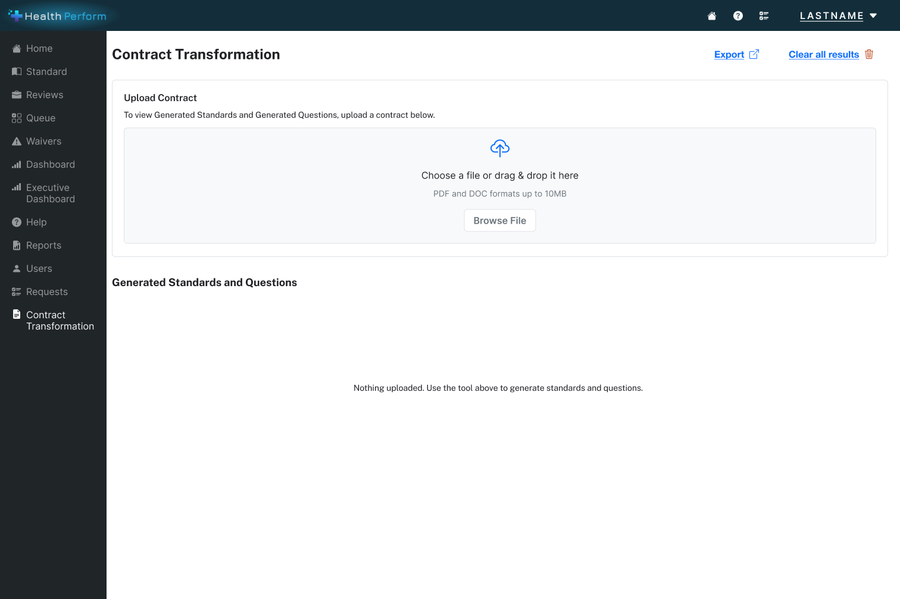
Step 2 , Select contract
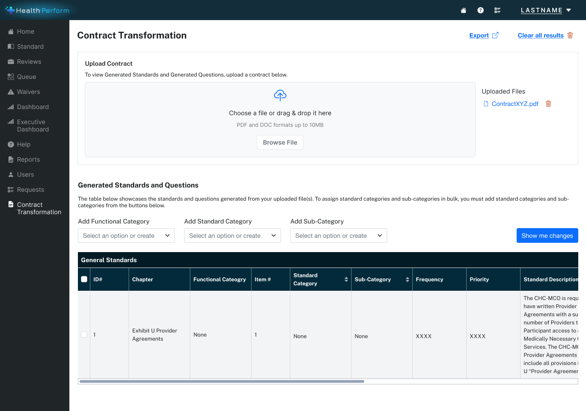
Step 3 , Upload in progress
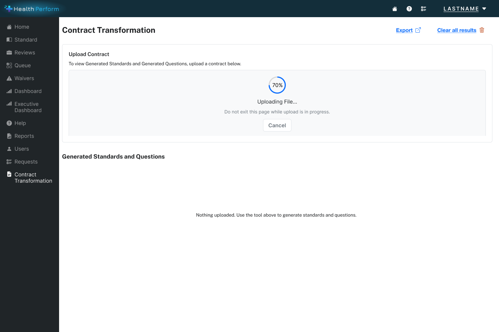
Step 4 , Upload confirmed
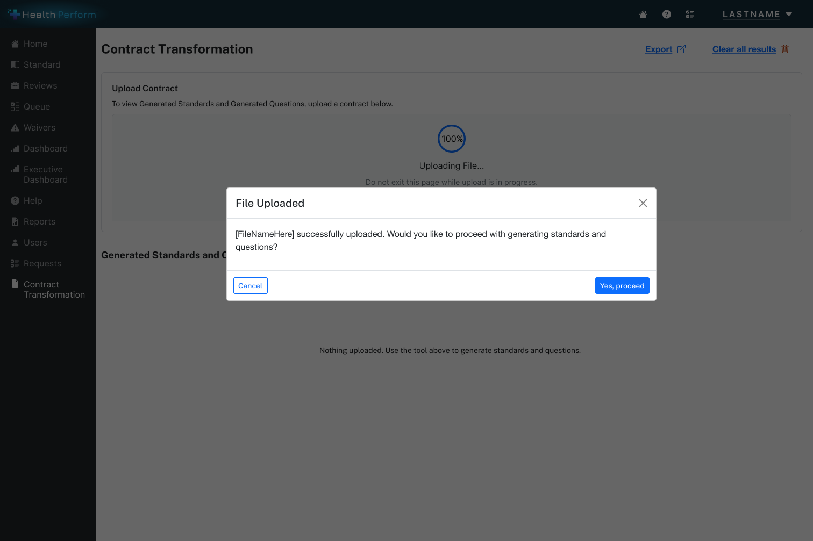
Feature 02
AI-Generated Standards Review UI
The core review experience where AI-extracted provisions and draft compliance standards are presented for human validation. Every AI-generated output is clearly labeled as a draft and fully editable before publishing. Each output is traceable back to the exact contract section it came from, enabling reviewers to verify and build defensible assessments without opening the original document.
Step 1 , Select categories
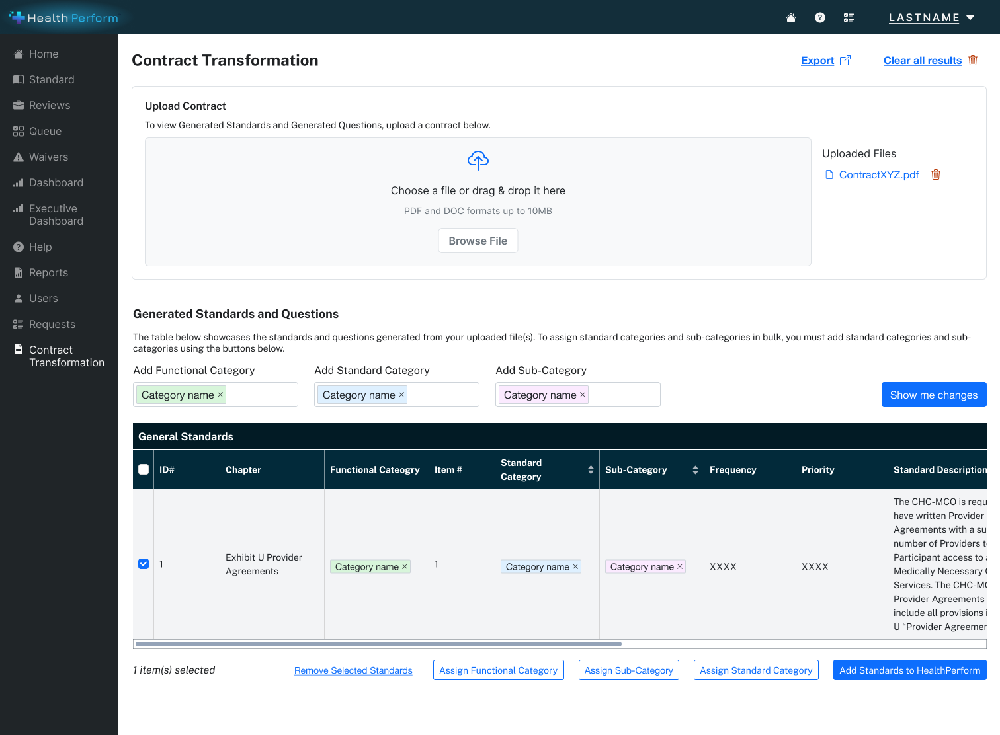
Step 2 , Edit AI-generated question
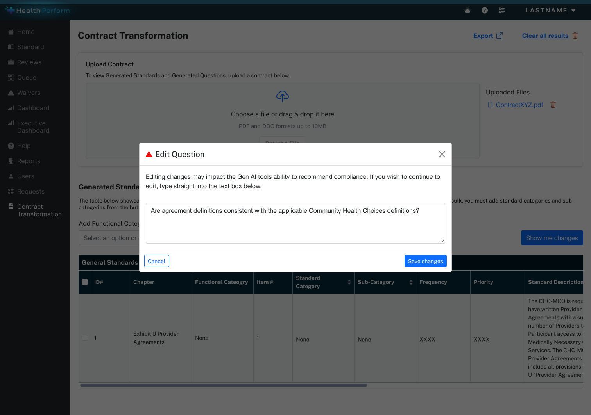
Step 3 , Accept AI changes
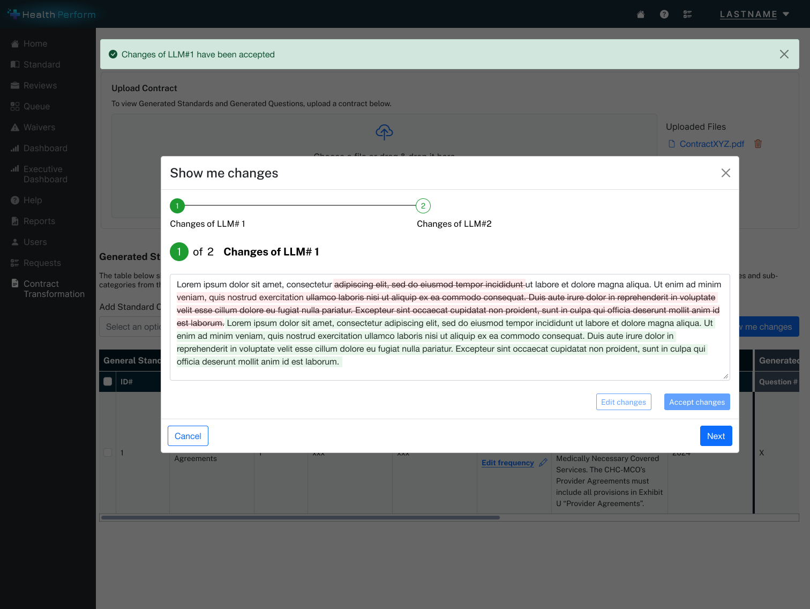
Step 4 , Edit and refine changes
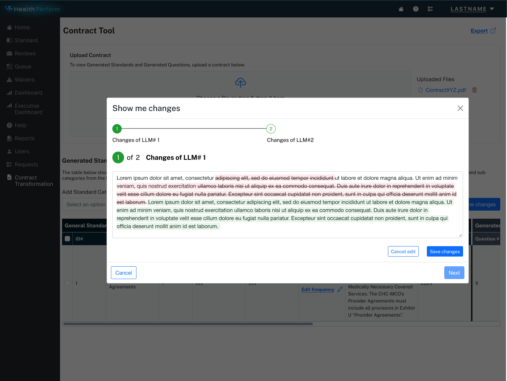
Feature 03
Compliance Assessment & Dashboard
An oversight view showing compliance outcomes (compliant / non-compliant), assessment reasoning, and citations back to specific contract sections. Designed for scannability and traceability , state administrators need to quickly see where issues exist and why, with enough evidence to act on and defend their decisions.
Step 1 , Review pending changes
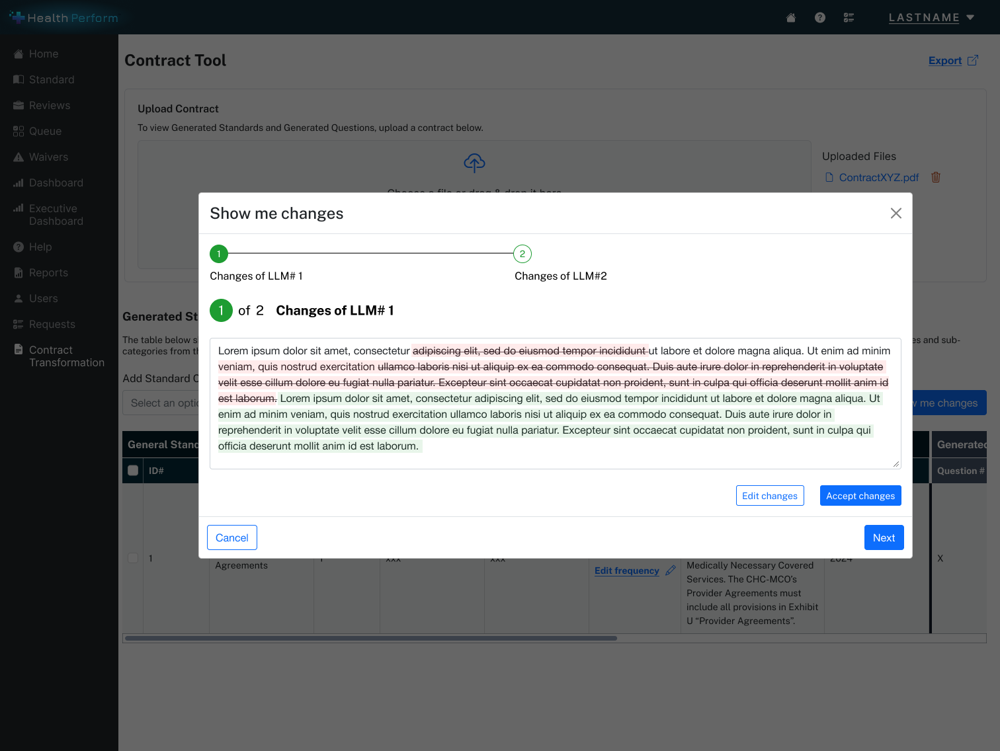
Step 2 , Confirm publish
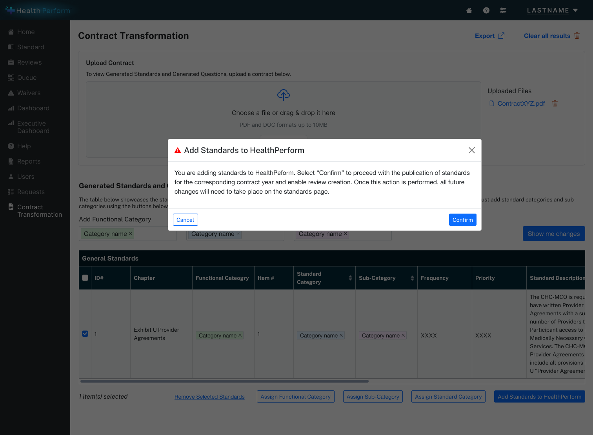
Step 3 , Change confirmed
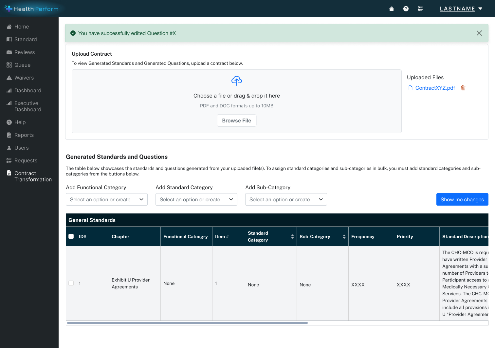
The User Experience
Six steps from contract upload to final determination , each designed to keep the human in control.
-
Entry via Contract Monitoring Dashboard
Accessed from within the HealthPerform platform, positioned as a native capability , not a separate AI tool. Embedding AI within existing workflows reduces the learning curve and signals enhancement, not replacement.
-
Contract Upload & Ingestion
User selects or uploads a Medicaid contract. The UI reassures the user that the AI will scan and analyze the document , framing next steps as a review experience rather than a data entry task. Mental model shift: you're no longer reading the contract, you're reviewing what the AI found.
-
AI Extraction & Provision Segmentation
AI parses the contract and automatically extracts all monitorable provisions. Core value moment: compressing what was previously days of manual document review into a structured, reviewable output. Each extracted provision is traceable back to the exact section of the original contract.
-
Human Review & Validation
Reviewer sees AI-generated provisions and draft compliance standards , clearly labeled as AI output, not final determinations. They can edit language, adjust interpretations, or reject suggestions before anything is published. Every affordance reinforces that the human is in control.
-
Compliance Assessment with Citations
System evaluates vendor-submitted documentation against published standards and surfaces a compliance outcome , compliant or non-compliant , with citations back to exact contract language. Reviewers no longer manually connect vendor submissions to contract requirements. Evidence is surfaced for them.
-
Final Determination
Reviewer confirms or overrides the AI-suggested compliance outcome. Final authority always rests with the human , a non-negotiable design principle in a regulatory environment where accountability and auditability are requirements, not preferences.
Design Principles
Human-in-the-Loop by Default
AI proposes, humans decide. Every generated output is framed as a draft. Every critical action requires a human confirmation. This wasn't a feature , it was the foundational design constraint that all other decisions flowed from.
Transparency & Explainability
Users needed to understand where AI outputs came from and how compliance recommendations were reached. The UI emphasized traceability back to contract language and evidence , essential for regulatory trust and audit readiness.
Reduction of Cognitive Load
The experience shifts users from authoring and parsing dense contract documents toward reviewing, validating, and deciding. This is higher-value work that better matches their expertise , and makes the AI's contribution feel like genuine assistance rather than automation.
Seamless Platform Integration
Rather than introducing a standalone AI tool, Compliance.Medicaid.AI was designed to feel native to HealthPerform's existing workflows. Familiarity reduces friction and builds trust , especially for government users approaching AI with appropriate caution.
The Demo Video
A Produced Asset, Not a Screen Recording
One of my most distinctive contributions was producing the demo video that brought the tool to life for external audiences. This wasn't a screen recording , it was a produced asset built in Premiere Pro and After Effects, designed to communicate the product's value proposition clearly and compellingly to non-technical stakeholders, state officials, and conference audiences.
The video became a primary asset:
- Featured at MESC 2025 , one of the premier national conferences for state Medicaid program leaders and technology partners
- Used at Deloitte's conference demo booth for live client engagement
- Requested for additional one-off state demos beyond the conference
- Submitted to Deloitte's 2025 Digital Health Video Symposium
Market Validation
"We absolutely need something like this for MCO management."
State Medicaid Director, MESC 2025
This kind of validation matters in the context of an MVP initiative. The tool had not yet been sold or deployed , but it resonated immediately with a real decision-maker who understood both the problem space and the regulatory stakes.
Reflection
Validate the review interactions earlier
With more time, I would have done lightweight user research with actual state compliance administrators before finalizing the standards review UI. The human-in-the-loop principle was grounded in best practices and domain knowledge , but validating the specific editing and review interactions with real users would have strengthened confidence in the design decisions.
Trust is the product
Designing AI experiences for regulated environments requires a fundamentally different design philosophy than standard product work. The goal isn't to make the AI feel powerful , it's to make the human feel confident. Trust is the product. That reframe changed how I think about every AI design problem.
Let's Connect
I'm always open to thoughtful conversations about design, collaboration, or new opportunities. The best way to reach me is email; I actually read it.